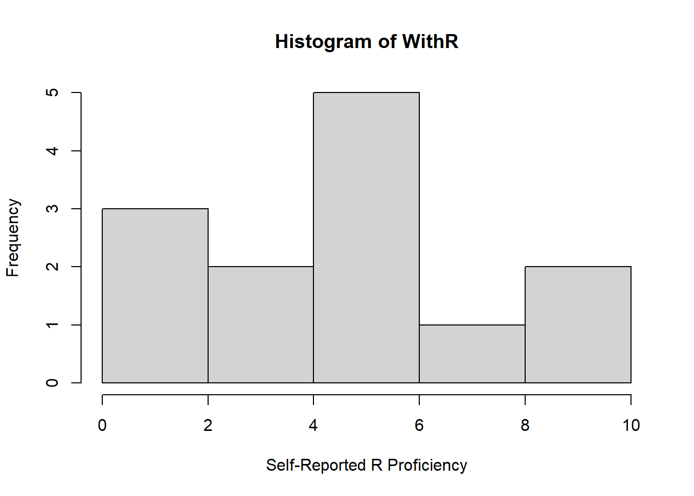
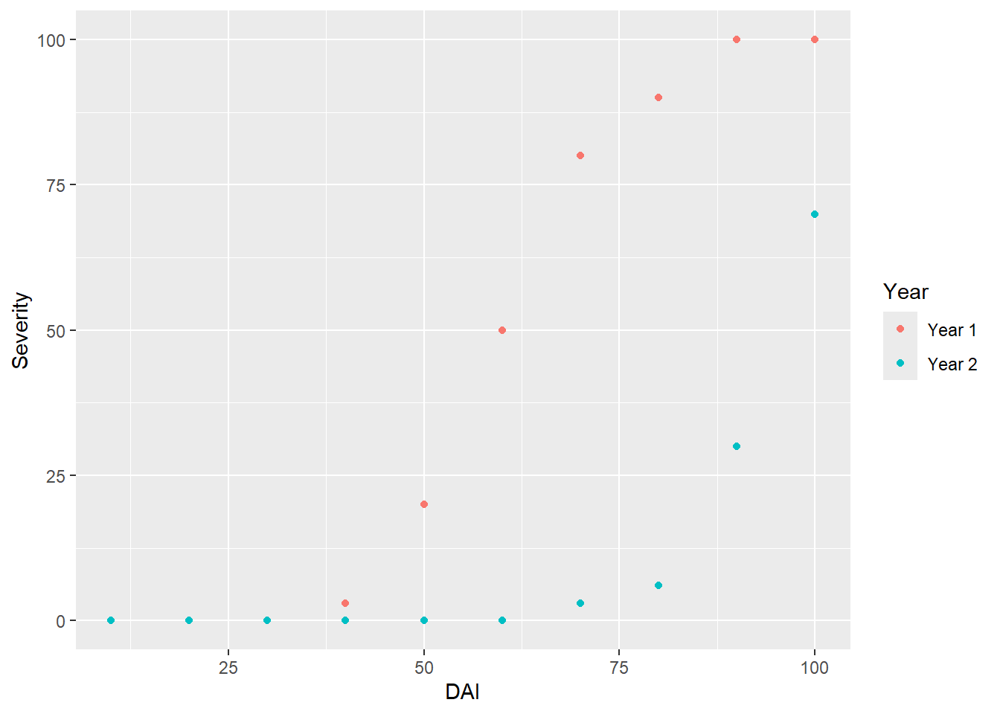

Here are some files you will need for this workshop. You should go
ahead and download them and place them in your working directory so you
can follow along with the code today.
Introductory PDF
Download CSV File
Download CSV File
Download CSV File
First, set your working directory. This is a folder in which you will
save this script, along with any files that will be used as part of your
analyses. We covered this in our introductory slides, but now would be a
good time to confirm your working directory is set. You can go ahead and
download the files linked above and place them in your working
directory.
R is essentially a fancy calculator. We can do any basic math calculation in R if we know the correct syntax.
## [1] 2## [1] 6## [1] 16777216
Our general workflow in R looks like this:
* First, we create objects to store data.
* Functions are applied on objects or another functions
(i.e. to analyze the data)
* Functions are organized in packages
* As we’re working, we save our code as scripts
* We store all our scripts for a given set of objectives as
projects
To make programming simpler, we usually save values or sets of values that we want to use again as objects. We do this using the symbols “<-” or “<<-” (called the “gets arrow”). Alternatively, we can use the equals symbol “=”.
## [1] 4## [1] 6## [1] 52## [1] 58## [1] "Throckmorton Hall"Here are some useful functions for working with objects:
## [1] 1## [1] "numeric"
For many applications, logical operators are necessary. Comparing values will return “True” or “False”
Note: R is case-sensitive and unforgiving! You will want to be very careful about using the correct case. The object A1 is not the same as a1.
Vectors are a way to turn a series of data elements into an object that can be used later.
## [1] 1 2 3 4 5## [1] "hello" "world"## [1] "TRUE" "FALSE" "TRUE"## [1] 1 2 3 4 5 6 7 8 9 10## [1] 1 2 3 1 2 3 1 2 3## [1] 1 1 1 1 1 2 2 2 2 2 3 3 3 3 3
Lets make a vector with hypothetical ratings of “R
expertise” in this group on a scale of 1-10.
## [1] 8.5 6.5 4.0 1.0 3.0 10.0 5.0 5.0 5.0 1.0 1.0 6.0 6.0
We can use the following functions to better understand our
vector.
## [1] 13## Min. 1st Qu. Median Mean 3rd Qu. Max.
## 1.000 3.000 5.000 4.769 6.000 10.000## [1] 4.769231## [1] 2.795945And graph a histogram of this distribution!

Notice that I choose to name my new object “WithR”. It is important to note that:
- R objects are case sentitive so “WithR” is different than “Withr” or “withr”
- Naming of objects is personal preference but the more intuitive, the better
- You cannot start with a number, but can end with one (WithR2)
- Object names can only contain letters, number, “_“, and”.” (WithR_2 or WithR.2)
Let’s make an object with the number of students in the class. When reading the assignment statement below we read it as “Class Size gets 13”
## [1] 13## [1] 13Lets make a vector of names.
Names <- c("Jim", "Carole", "Joe", "Michelle", "Jen", "Pete", "Paul", "Tim",
"Jess", "Mark", "Jill", "Cam", "Kate") ## names are random
Names## [1] "Jim" "Carole" "Joe" "Michelle" "Jen" "Pete"
## [7] "Paul" "Tim" "Jess" "Mark" "Jill" "Cam"
## [13] "Kate"
Let’s continue with our R experience example to illustrate how we can
build data frames in R.
We can bind together two or more vectors to make a dataframe using cbind.data.frame() bring together the two columns. Note that cbind stands for “column bind” and rbind stands for “row bind”.
## Names WithR
## 1 Jim 8.5
## 2 Carole 6.5
## 3 Joe 4.0
## 4 Michelle 1.0
## 5 Jen 3.0
## 6 Pete 10.0
## 7 Paul 5.0
## 8 Tim 5.0
## 9 Jess 5.0
## 10 Mark 1.0
## 11 Jill 1.0
## 12 Cam 6.0
## 13 Kate 6.0Lets bind vertically to see the difference between rbind and cbind.
NamesScoresR <- rbind(Names, WithR) # row bind
NamesScoresR <- as.data.frame(NamesScoresR) # make a dataframe
NamesScoresR## V1 V2 V3 V4 V5 V6 V7 V8 V9 V10 V11 V12 V13
## Names Jim Carole Joe Michelle Jen Pete Paul Tim Jess Mark Jill Cam Kate
## WithR 8.5 6.5 4 1 3 10 5 5 5 1 1 6 6If we want to add the age and gender of the students, we can add a vector of names as another column to the data set
Age <- c(22, 31, 25, 21, 22, 35, 42, 27, 26, 33, 26, 28, 22) #make a vector of ages
Gender <- c("Male", "Female", "Male", "Female", "Female", "Male","Male","Male", "Female", "Male", "Female", "Male", "Female")
NamesScores <- cbind(NamesScores, Age, Gender) #column bind all three vectors to make a dataframe
NamesScores## Names WithR Age Gender
## 1 Jim 8.5 22 Male
## 2 Carole 6.5 31 Female
## 3 Joe 4.0 25 Male
## 4 Michelle 1.0 21 Female
## 5 Jen 3.0 22 Female
## 6 Pete 10.0 35 Male
## 7 Paul 5.0 42 Male
## 8 Tim 5.0 27 Male
## 9 Jess 5.0 26 Female
## 10 Mark 1.0 33 Male
## 11 Jill 1.0 26 Female
## 12 Cam 6.0 28 Male
## 13 Kate 6.0 22 FemaleLets save this new dataframe as a csv in our working directory using the write.csv function. Check to see if you have the file in your folder!
Alternatively, we could have put together our complete dataframe using the data.frame function:
NamesScores3 <- data.frame(
Names =c("Jim", "Carole", "Joe", "Michelle", "Jen", "Pete", "Paul", "Tim",
"Jess", "Mark", "Jill", "Cam", "Kate") ,
Experience = c(8.5, 6.5, 4, 1, 3, 10, 5, 5, 5, 1, 1, 6, 6) ,
Age = c(22, 31, 25, 21, 22, 35, 42, 27, 26, 33, 26, 28, 22) ,
Gender = c("Male", "Female", "Male", "Female", "Female", "Male","Male","Male", "Female", "Male", "Female", "Male", "Female"))
NamesScores3 ## Names Experience Age Gender
## 1 Jim 8.5 22 Male
## 2 Carole 6.5 31 Female
## 3 Joe 4.0 25 Male
## 4 Michelle 1.0 21 Female
## 5 Jen 3.0 22 Female
## 6 Pete 10.0 35 Male
## 7 Paul 5.0 42 Male
## 8 Tim 5.0 27 Male
## 9 Jess 5.0 26 Female
## 10 Mark 1.0 33 Male
## 11 Jill 1.0 26 Female
## 12 Cam 6.0 28 Male
## 13 Kate 6.0 22 Female
What if we only care about the first four members of the class? We can use subsetting to select the values in our data frame that we are interested in.
## syntax: dataframe[rows, columns]
FirstFour <- NamesScores[1:4,] ## this means select row 1 through 4 in data frame NamesScores
FirstFour## Names WithR Age Gender
## 1 Jim 8.5 22 Male
## 2 Carole 6.5 31 Female
## 3 Joe 4.0 25 Male
## 4 Michelle 1.0 21 FemaleWhat if we just wanted the second column?
## [1] 8.5 6.5 4.0 1.0 3.0 10.0 5.0 5.0 5.0 1.0 1.0 6.0 6.0##Now you try! - Make an object called “obj1” with a vector of the numbers 1-13 - bind that vector to our “NamesScores” object, creating a new data frame - Name the new three column data frame “NamesScores2”
It might look something like this:
## Names WithR Age Gender obj1
## 1 Jim 8.5 22 Male 1
## 2 Carole 6.5 31 Female 2
## 3 Joe 4.0 25 Male 3
## 4 Michelle 1.0 21 Female 4
## 5 Jen 3.0 22 Female 5
## 6 Pete 10.0 35 Male 6
## 7 Paul 5.0 42 Male 7
## 8 Tim 5.0 27 Male 8
## 9 Jess 5.0 26 Female 9
## 10 Mark 1.0 33 Male 10
## 11 Jill 1.0 26 Female 11
## 12 Cam 6.0 28 Male 12
## 13 Kate 6.0 22 Female 13
Functions are blocks of code that we can reuse to run set tasks in R. We have already used several functions that are built into base R (for example, rbind(), hist()). As you begin to run more complex analyses, you may choose to write functions to simplify repetitive coding tasks.
NewFunction <- function(a,b) {
a + b
} ## first specify the parameters that you want to include in your function, then add the operations you want performed on your parameters
j1 <- NewFunction(1,2) ## here is an example where we made a function to add a and b, and we set a and b to 1 and 2.
j1## [1] 3
Matrices are two dimensional and contain elements of the same
category.
help(matrix) ## if you want to read the documentation for a function, you can use the help() function## starting httpd help server ... done## [,1] [,2] [,3]
## [1,] 1 1 1
## [2,] 1 1 1
## [3,] 1 1 1Packages are toolboxes that include functions, data and code for specific tasks. To get started, lets install the package “ggplot2”. Note, remove the “#” from before install.packages() to load for the first time. The “#” comments out any code so it will not be run.
Note: if you have installed an R package once on your computer, you will not need to install it again unless you have a major software update. However, you will need to load the library at the begining of each new session using the library() function.
Now make sure to place your “StripeRust.csv” file in the working directory that we set, then load the data in using the “read.csv” function.
RustData <- read.csv("StripeRust.csv", header = TRUE) #Header = TRUE lets R know that we have headings in the first row of our data set.
head(RustData) ## check the first few rows of the dataset## Year DAI Severity
## 1 Year 1 10 0
## 2 Year 1 20 0
## 3 Year 1 30 0
## 4 Year 1 40 3
## 5 Year 1 50 20
## 6 Year 1 60 50## [1] "Year" "DAI" "Severity"We can plot this data using ggplot2. Tell the graphing function to use the data “RustData” and then add a layer to the plot with the geom_point() function with severity on the y axis and time on the x axis. Color the points by the year that data was collected.
